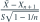
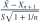
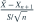
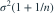

独立来自
独立来自  ，
， ，
， 是前 n 个观测的无偏样本方差，
是前 n 个观测的无偏样本方差， 为其平方根。哪个统计量服从
为其平方根。哪个统计量服从  ？
？- A
- B

- C

- D

我已思考，展开答案与解析
正确答案：C
- 分子均值为 0，方差为

，并与由前 n 个样本残差构成的 S 独立。 - 再利用
 ，可按 t 分布定义构造所列枢轴量。
，可按 t 分布定义构造所列枢轴量。
易错提醒预测新观测多出一项总体噪声方差，不能只用样本均值的标准误。
JYSG · 432精选 · 册内中国科学技术大学432·2026年·填空三；PDF第84页（印刷页82）
原大题拆解